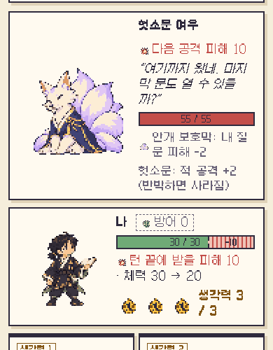
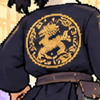
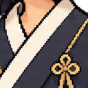
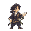

A · 여유 우선

120×120
96×96
96 / 여우120 · 1배. 현재 창보다 작아 디테일은 제한
재제작2판 · 새 게임 그림의 실제 캡처와 자리 크기 비교
아래 테두리는 크기 후보의 자리 비교야. 캡처에는 새 AI 생성 그림의 게임 호환본이 연결돼 있어. 검토 마스터는128·160px야.
일반(나·도깨비·호랑이) / 여우 · 모두 1배 제안. 같은 바닥선·중심. 원본 캡처 y400~900 부분, 가로390 그대로.

96 / 여우120 · 1배. 현재 창보다 작아 디테일은 제한
128 / 여우160 · 1배. 현재 칸에 맞고 점 수는 4배
160 / 여우200 · 1배. 오른쪽 정보 공간을 침범


눈과 줄무늬, 흰 깃, 금빛 원형 용이 따로 읽히는 정도. 컨셉의 반투명 번짐은 재사용하지 않아. 1~2px 잉크 실루엣·안쪽 단색 면으로 다시 제작할 기준이야.
밝음·본색·그늘. 주름은 면으로, 번짐·디더링 없이.
작은 얼굴·문양이 꼭 필요할 때만. 칩은 규칙 설명용 UI.

현재 게임은64px 호환본×2.128px 검토 마스터는 첫 화면의 동작모음에서 봐.